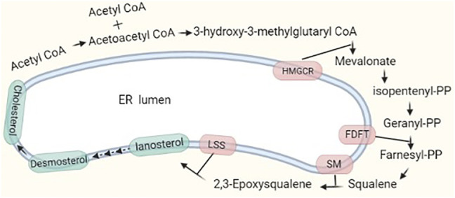
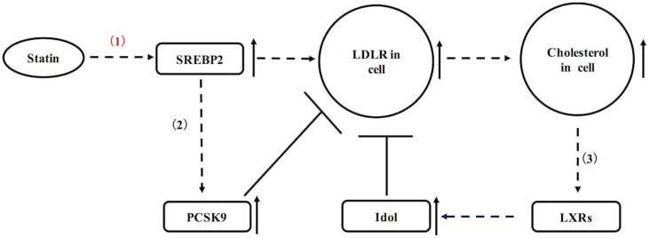
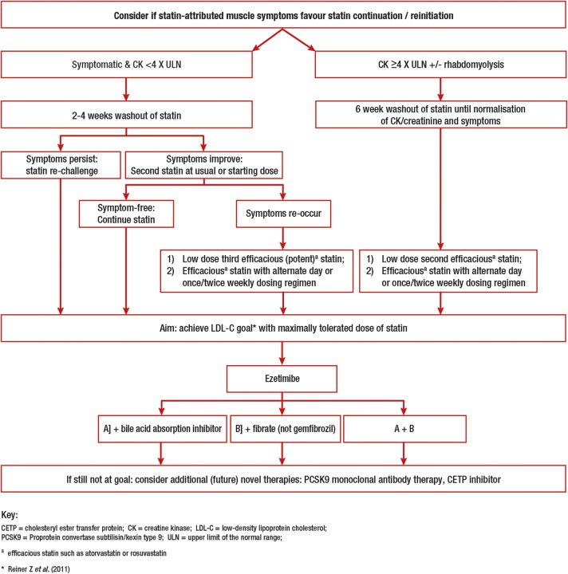

藥物
Statin ｜ HMG-CoA 還原酶抑制劑 · 他汀類
筆記更新 2026-07-27·整理狀態：可用
其他名稱 12
Statin · statins · 他汀類 · 史他汀 · HMG-CoA 還原酶抑制劑 · Atorvastatin · Rosuvastatin · Simvastatin · Pravastatin · Pitavastatin · Lovastatin · Fluvastatin
機轉 Mechanism
flowchart LR
A["抑制 HMG-CoA<br/>還原酶"] --> B["肝細胞內<br/>膽固醇下降"] --> C["LDL 受體上調"] --> D["血中 LDL 被清除<br/>斑塊穩定"]
A --> E["CoQ10／isoprenoid<br/>減少"] --> F["肌痛 肌病變<br/>橫紋肌溶解"]
style D fill:#1b5e20,stroke:#0b3d0b,color:#fff
style F fill:#8e0000,stroke:#5f0000,color:#fff
筆記中的流程與關係

膽固醇合成主路徑：acetyl-CoA → HMG-CoA → HMG-CoA reductase（HMGCR） → mevalonate → isoprenoid／squalene／lanosterol → cholesterol。Statin 的直接靶點就是 HMGCR，因此上游 HMG-CoA 無法有效進入 mevalonate pathway。Source: Luo et al., Front Cell Dev Biol 2022, Figure 1（CC BY 4.0）。

肝細胞內 cholesterol 下降會啟動 SREBP2，提升 LDLR 表現，把血中 LDL 顆粒抓回肝細胞；同時也會上調 PCSK9，形成部分抵銷 LDLR 的回饋。這解釋 statin 為何降低 plasma LDL，也解釋 PCSK9 inhibitor 與 statin 的互補性。Source: Lagace, Front Pharmacol 2017, Figure 1（CC BY 4.0）。
強度分級
| 強度 |
LDL 降幅 |
藥與劑量 |
| 高強度 High |
≥50% |
Atorvastatin 40–80 mg｜Rosuvastatin 20–40 mg |
| 中強度 Moderate |
30–49% |
Atorvastatin 10–20 mg｜Rosuvastatin 5–10 mg｜Simvastatin 20–40 mg｜Pravastatin 40–80 mg｜Lovastatin 40–80 mg｜Fluvastatin XL 80 mg 或 Fluvastatin 40 mg BID｜Pitavastatin 1–4 mg |
| 低強度 Low |
＜30% |
Simvastatin 10 mg｜Pravastatin 10–20 mg｜Lovastatin 20 mg｜Fluvastatin 20–40 mg |
（版本陷阱：本表照 2018 版 Table 3，pitavastatin 1–4 mg 全屬中強度；2013 版則把 pitavastatin 1 mg 列為低強度，未指明版本時以 2018 版為準。）
代謝途徑與各藥差異
| 代謝途徑 |
藥 |
意義 |
| CYP3A4 |
Lovastatin、Simvastatin、Atorvastatin |
怕葡萄柚汁、怕 macrolide、怕 azole 抗黴菌藥、怕 HIV 蛋白酶抑制劑、怕 amiodarone／verapamil／diltiazem → 血中濃度上升 → 肌病變與橫紋肌溶解風險上升 |
| CYP2C9 |
Rosuvastatin、Fluvastatin |
不受葡萄柚影響；rosuvastatin 只有少部分經 CYP2C9，整體代謝很少 |
| 不主要經 CYP |
Pravastatin（走第二相 glucuronidation／sulfation）、Pitavastatin |
交互作用最少，多重用藥或器官移植病人常選 |
| 其他區分軸 |
分法 |
| 前驅藥（要代謝後才有活性） |
Simvastatin、Lovastatin（其餘為活性型） |
| 脂溶性 vs 水溶性 |
脂溶性（較易進入肌肉、可能與肌肉症狀相關）：Simvastatin、Lovastatin、Atorvastatin、Fluvastatin、Pitavastatin｜水溶性（較侷限於肝臟）：Pravastatin、Rosuvastatin |
適應症 Indications
| 適應症 |
角色 |
| 已有 CAD／ACS／缺血性中風／周邊動脈疾病（臨床 ASCVD 的次級預防） |
高強度 statin，第一線；已達最大耐受劑量而 LDL 仍 ≥70 mg/dL 的極高風險者 → 加 Ezetimibe↗ → 再不夠加 PCSK9 inhibitor↗ |
| LDL ≥190 mg/dL |
高強度 statin，不必算風險分數；目標降幅 ≥50%；仍 ≥100 mg/dL 時加 Ezetimibe↗ |
| 糖尿病、年齡 40–75 歲 |
中強度 statin，不必算風險分數；合併多項危險因子時升到高強度、目標降幅 ≥50% |
| 心衰竭本身、洗腎本身 |
不是開 statin 的理由——這兩族群的臨床試驗未顯示獲益（見 Heart failure） |
一級預防（40–75 歲、LDL 70–189 mg/dL、無糖尿病）依 10 年 ASCVD 風險分層
| 10 年 ASCVD 風險 |
分類 |
處置 |
| ＜5% |
低 |
生活型態為主 |
| 5–7.4% |
邊緣 |
有風險增強因子時可考慮中強度 statin |
| 7.5–19.9% |
中 |
中強度 statin；決策不明時可用**冠狀動脈鈣化分數（CAC）**幫忙 |
| ≥20% |
高 |
高強度 statin，目標降幅 ≥50% |
劑量與用法
| 情境 |
劑量 |
| 腎功能不良 |
rosuvastatin：CrCl ＜30（未透析）起始 5 mg、不超過 10 mg／日；pravastatin 減量起始。atorvastatin 全程不需依腎功能減量；fluvastatin 輕至中度腎功能不全不需調整，嚴重腎功能不全時應謹慎並避免 ＞40 mg／日與 XL 80 mg |
| 肝功能不良 |
活動性肝病或不明原因持續轉胺酶升高：不用。穩定的脂肪肝不是禁忌，反而常獲益 |
| 亞洲人 |
rosuvastatin 在亞洲人的血中濃度約為白人的兩倍，仿單建議起始 5 mg |
| 併用 gemfibrozil 或 cyclosporine 時 |
rosuvastatin 上限 10 mg（gemfibrozil）／5 mg（cyclosporine）；simvastatin 禁止與這兩者併用 |
副作用 Adverse Effects
肌肉症狀常見，但真正的橫紋肌溶解罕見；轉胺酶輕度上升不少見，有臨床意義的肝損傷極罕見。
| 副作用 |
表現與要點 |
| 肌痛 myalgia（有症狀、CK 正常） |
對稱性近端肌肉痠痛無力 |
| 肌病變 myopathy（症狀＋CK 明顯上升） |
肌肉無力、CK ＞10 倍正常上限 |
| 橫紋肌溶解 Rhabdomyolysis↗ |
劇烈肌痛＋茶色尿＋急性腎損傷；很罕見但一發生就是急症 |
| 免疫媒介壞死性肌病變（抗 HMGCR 抗體） |
極罕見。停藥後症狀不但沒好還持續惡化——這是它與一般肌痛最重要的區分點，需免疫抑制治療 |
| 轉胺酶上升 |
劑量相關，多半無症狀、常自行回復；出現黃疸、倦怠、右上腹痛才是真正的肝損傷 |
| 新發糖尿病 |
小幅增加，高強度時較明顯；空腹血糖／HbA1c 略升 |

SAMS 處置分流：有症狀但 CK ＜4× ULN 者先短期停藥、排除次因並 rechallenge；CK ≥4× ULN 或疑 rhabdomyolysis 者要停藥至症狀與 CK／creatinine 正常，再以不同 statin、低劑量或間歇給藥重試。若 CK ＞10× ULN、肌紅蛋白尿或 AKI，視為急症而非一般「痠痛」。Source: Stroes et al., Eur Heart J 2015, Figure 2（CC BY-NC 4.0）。
交互作用與監測
| 併用什麼 |
會發生什麼 |
怎麼處理 |
| 葡萄柚汁（大量） |
抑制腸道 CYP3A4 → simvastatin／lovastatin／atorvastatin 濃度上升 |
限制攝取，或改 pravastatin／pitavastatin／rosuvastatin |
| 強效 CYP3A4 抑制劑：macrolide（clarithromycin、erythromycin）、azole 抗黴菌藥（itraconazole、ketoconazole、posaconazole、voriconazole）、HIV／HCV 蛋白酶抑制劑 |
濃度數倍上升 → 肌病變／橫紋肌溶解 |
與 simvastatin／lovastatin 禁止併用（短療程可療程期間暫停 statin）；長期用藥改 pravastatin 或 pitavastatin，atorvastatin 需大幅減量。azithromycin 不是有意義的 CYP3A4 抑制劑，可以併用 |
| Amiodarone、verapamil、diltiazem |
中度 CYP3A4 抑制 |
依上限減量（見劑量段） |
| Gemfibrozil |
抑制 glucuronidation 與 OATP1B1 → statin 暴露量大增 → 橫紋肌溶解風險最高的組合 |
避免併用。真的需要 fibrate 時改 fenofibrate（見 Fibrate↗） |
| Cyclosporine |
抑制 OATP1B1 與 CYP3A4 → 暴露量倍增 |
simvastatin 禁用；rosuvastatin 上限 5 mg |
| Colchicine |
肌毒性相加 |
兩者都用時對肌肉症狀提高警覺 |
| CYP3A4 誘導劑（rifampin、carbamazepine、phenytoin、聖約翰草） |
濃度下降 → 降脂效果不足 |
換不走 CYP3A4 的藥或加量 |
| Warfarin |
fluvastatin、rosuvastatin 可能使 INR 上升 |
起始或調量後加測 INR |
要追蹤的指標：起始前測一次轉胺酶（ALT／AST）與血脂；起始或調量後 4–12 週複驗血脂，看的是降幅（高強度 ≥50%、中強度 30–49%）而不只是數值，之後每 3–12 個月一次（2018 膽固醇指引）；ACS 病人另依 2025 ACC/AHA ACS 指引，於起始或調整降脂藥後 4–8 週複驗空腹血脂。降幅明顯不足時先想順從性（最常見），再想劑量與是否需要加第二種藥。
特殊族群
| 族群 |
注意事項 |
| 孕婦 |
實務上仍避免使用：懷孕期間膽固醇是胎兒細胞膜與類固醇荷爾蒙合成所必需，而降 LDL 的獲益要數年才顯現，短期停藥幾乎無損失。多數病人一確認懷孕就停藥，計畫懷孕者提前停；開藥時同步討論避孕與懷孕計畫。極高風險的少數個案（如同合子家族性高膽固醇血症）可個別評估後續用 |
| 哺乳 |
不建議使用——脂溶性藥物可分泌至乳汁，嬰兒正需要膽固醇合成髓鞘 |
| 老年 |
次級預防的獲益明確，年齡不是停藥理由；但肌肉症狀與交互作用風險較高（多重用藥、腎功能下降），傾向從中強度起始再往上調。單純一級預防在 ≥75 歲的證據較弱，需個別權衡餘命與意願 |
| 腎功能不良／透析 |
rosuvastatin 要減量（CrCl ＜30 未透析：起始 5 mg、上限 10 mg）；atorvastatin 全程不需依腎功能減量，是腎功能差時的方便選擇。但已在透析的病人不必為了心血管預防而新開 statin——這族群的試驗未顯示獲益 |
| 兒童 |
家族性高膽固醇血症約 8–10 歲以後可依各藥仿單起始，需專科評估與追蹤生長發育 |
| 甲狀腺低下 |
先矯正甲狀腺功能再評估血脂——本身就會造成高膽固醇血症與肌肉症狀，未矯正就開藥會同時誤判療效與副作用 |
禁忌與陷阱
相關連結
- CAD、PCI↗ — 次級預防與術後長期用藥的骨幹，屬「改善預後」那一類
- ACS — 不論當下 LDL 高低，住院期間即開始高強度 statin
- Antiplatelet — 同屬改善預後，兩者常一起出現
- Beta blocker↗ — 對照：改善預後與緩解症狀兩欄都佔
- Ezetimibe↗ → PCSK9 inhibitor↗ — statin 未達標時的第一、第二個加法
- Fibrate↗ — gemfibrozil 是最危險的併用組合，fenofibrate 相對安全
- Rhabdomyolysis↗ — 最嚴重的副作用，處置完全不同
- Heart failure — 對照：單純心衰竭並非開 statin 的理由